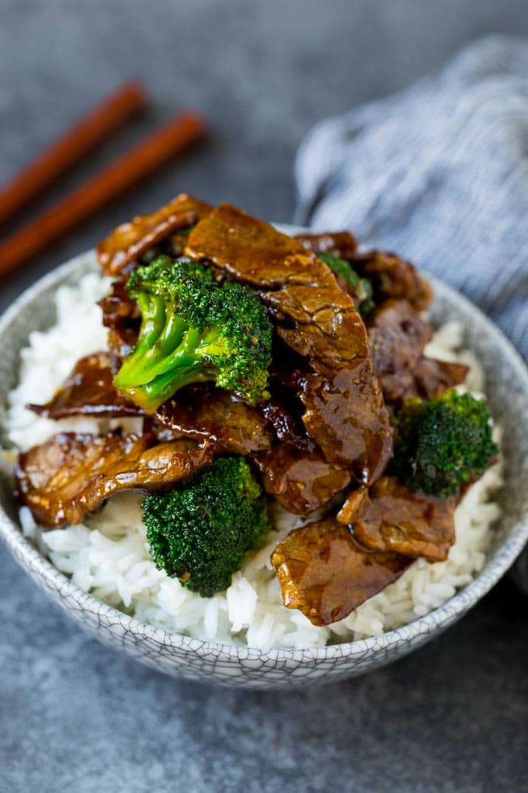

Stir-Fried Beef with Broccoli

Description
Broccoli beef stir-fry is a perfect weeknight dish that has it all- rice, meat, and vegetables!
By slicing a tough cut of beef thinly against the grain, each bite is tender carmelized perfection.
Recreate the takeout staple from home using this quick and easy recipe!
Ingredients
- Flank steak
- Broccoli
- Soy sauce
- Scallions
- Cornstarch
- Brown sugar
- Garlic
- Red pepper flakes
- White rice
- Sesame seeds (as garnish)
Steps
- Thinly slice the flank steak against the grain and finely mince garlic.
- Mix soy sauce, brown sugar, garlic, red pepper flakes, and cornstarch in small bowl. Add steak to marinate until time to cook.
- Rinse rice then place in rice cooker or stovetop pot to cook. Set timer for 20 minutes (or follow directions on bag).
- While the rice is cooking and meat is marinating, cut broccoli into bite-size pieces and slice
scallions at the diagonal into thick bite-sized pieces. Separate the white and green portions.
- Heat vegetable oil in a large pan over high heat. Once very hot, add the strips of marinated beef and scallion whites.
Flip after two minutes then remove after one additional minute, or until browned and fragrant.
Cook in batches if necessary to avoid crowding.
- Remove meat and scallions and place broccoli into hot pan. Cook, stirring frequently,
until bright green in color and partially browned. Remove.
- Reduce the pan's heat to medium. Add in the remaining marinade and cook until thickened.
- Reintroduce meat, scallion whites, and broccoli. Stir until thoroughly coated in sauce and warmed through.
- Serve over rice, garnished with sesame seeds and scallion greens.
- Enjoy!
Home